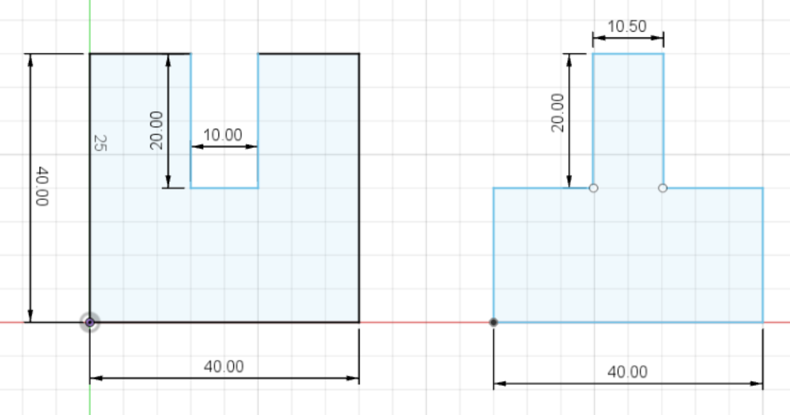
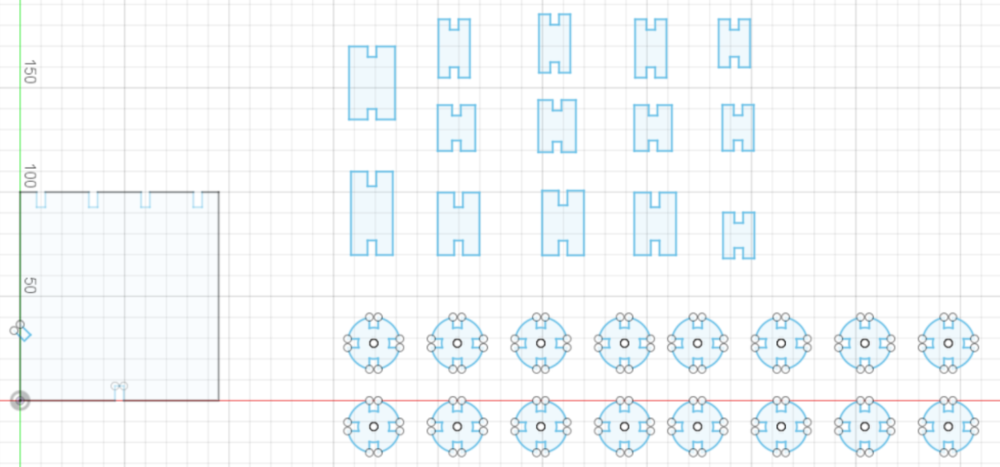
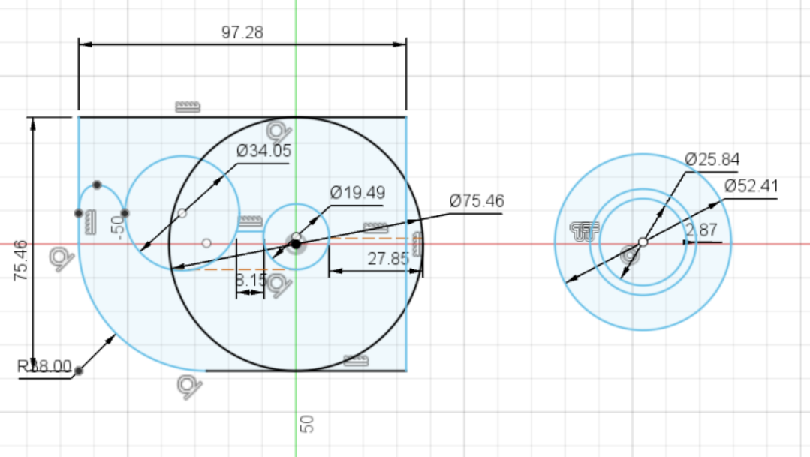

Week 2: 2D Design & Cutting
This week, we focused on 2D Design & Cutting.
We were instructed to create a press-fit construction kit that could be assembled in multiple ways. To do so, we needed to sketch shapes in Fusion 360 and also account for lasercutter kerf. For my project, I decided to make a model of my hand. It can be assembled in multiple ways because of "joints" that allow one to change the orientation of individual digit segments. I found the kerf by laser cutting interlocking pieces with known dimensions. These pieces did not fit snugly because of the kerf (this was the expected result). I used calipers to measure the distance between the two "walls" of the receiving piece. The distance in the sketch was 10mm, but I measured 10.50mm with the calipers. So, I changed the distance on the other piece to 10.50mm, laser cut it, and tested to see if it fit snugly into the receiving piece now. Sure enough, it did! So, I knew the kerf was 0.25mm.
These were the pieces I used to find the kerf:
I accounted for terf in my design by setting two parameters, the average thickness of the material (cardboard) being laser cut and the kerf (4.42mm and 0.25mm, respectively). For every notch in my design, the distance from the centerline to the wall of the piece was equal to (Thickness-Kerf)/2. In other words, each notch was 4.17mm wide.
This is what my final design looked like in Fusion 360:
I was really happy with how my project came out! I also added a base later on. This is what my finished project looks like:
I also worked through a Fusion 360 tutorial, and watched all the videos in the "Fusion 360 Tutorial for Beginners" playlist by CAD CAM Tutorials on YouTube. I found these tutorials really helpful and it would have saved me a lot of time had I watched them before starting the 2D design project described above. In addition to 2D design, the tutorial covered 3D design in Fusion 360 extensively. I learned how to extrude 2D shapes and how to navigate the 3D workspace, including new functions such as shell, which I used when working on the third assignment for this week. I think I have a much better understanding of Fusion 360 and feel confident using the program, even though I sometimes make mistakes or get stuck. I am sure I will get better with practice, but there is still a lot that I do not know how to do, for example how to properly use the functions in the "Construct" tab.
The last assignment for this week was to select at least 2 household objects or components from the lab, measure them using calipers, and model them in Fusion 360 (or other program). I chose to model a roll of tape and a tape dispenser. After measuring the objects, I designed a 2-D sketch that I extruded. I then made modifications to the 3D models, for example hollowing out the inside of the tape dispenser (using the shell tool was really tricky given the shape), and made an assembly by placing the roll of tape into the tape dispenser. I also colored the tape so that it can be differentiated from the dispenser. Here are some screenshots I took while working on this project:
That is all for this week. Thank you!
Powered by w3.css
Mohammed Mutaher 2022